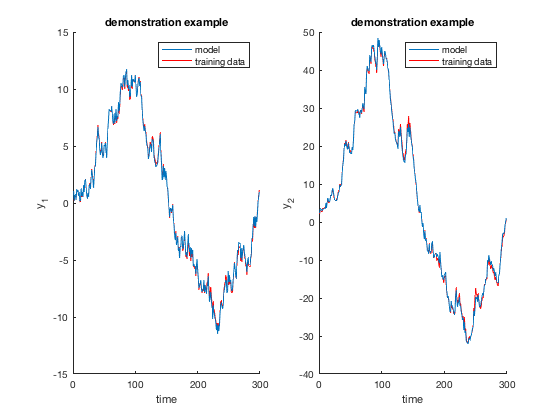

lolimotDemo7 Demo 7: Dynamic process of first order with 2 inputs and 2 outputs.
HiLoMoT - Nonlinear System Identification Toolbox
Benjamin Hartmann, 25-January-2013
Institute of Mechanics & Automatic Control, University of Siegen, Germany
Copyright (c) 2013 by Prof. Dr.-Ing. Oliver Nelles
LMN = hilomot;
u1 = randn(300,1);
u2 = sin(linspace(0,2*pi,300))';
y1 = zeros(300,1);
y2 = zeros(300,1);
for k = 2:300
y1(k) = atan(u1(k-1)) + atan(u2(k-1)) + 0.9*y1(k-1);
y2(k) = u1(k-1).^2 + u1(k-1)*u2(k-1) + 0.7*y1(k-1) + 0.8*y2(k-1);
end
LMN.input = [u1 u2];
LMN.output = [y1 y2];
LMN.info.dataSetDescription = 'demonstration example';
LMN.info.inputDescription = {'input 1', 'input 2'};
LMN.info.outputDescription = {'output 1', 'output 2'};
LMN.xInputDelay = cell(1,2);
LMN.xOutputDelay = cell(1,2);
LMN.zInputDelay = cell(1,2);
LMN.zOutputDelay = cell(1,2);
LMN.xInputDelay{1} = [1]; LMN.xInputDelay{2} = [1];
LMN.xOutputDelay{1} = [1]; LMN.xOutputDelay{2} = [1];
LMN.zInputDelay{1} = [1]; LMN.zInputDelay{2} = [1];
LMN.zOutputDelay{1} = [1]; LMN.zOutputDelay{2} = [1];
LMN.maxNumberOfLM = 5;
LMN.minError = 0.02;
LMN.kStepPrediction = inf;
LMN.history.displayMode = true;
LMN = LMN.train;
u1G = randn(270,1);
u2G = sin(linspace(0,2*pi,length(u1G)))';
y1G = zeros(length(u1G),1);
y2G = zeros(length(u1G),1);
for k = 2:length(y1G)
y1G(k) = atan(u1G(k-1)) + atan(u2G(k-1)) + 0.9*y1G(k-1);
y2G(k) = u1G(k-1).^2 + u1G(k-1)*u2G(k-1) + 0.7*y1G(k-1) + 0.8*y2G(k-1);
end
uG = [u1G u2G];
yG = [y1G y2G];
yGModel = calculateModelOutput(LMN, uG, yG);
JG = calcGlobalLossFunction(LMN ,yG, yGModel);
figure
subplot(1,2,1)
LMN.plotModel([],1)
subplot(1,2,2)
LMN.plotModel([],2)
Initial net has 1 local model(s): J = 0.088410
1. Iteration. Number of local models = 1. Checking for split of model 1 ...
Testing split in dimension 1: J = 0.060450
Testing split in dimension 2: J = 0.070119
Testing split in dimension 3: J = 0.073552
Testing split in dimension 4: J = 0.074933
Axes-oblique splitting: J = 0.049505
-> SPLITTING RESULT: J = 0.049505
2. Iteration. Number of local models = 2. Checking for split of model 3 ...
Testing split in dimension 1: J = 0.043912
Testing split in dimension 2: J = 0.041120
Testing split in dimension 3: J = 0.042595
Testing split in dimension 4: J = 0.042522
Testing parent split: J = 0.043755
Axes-oblique splitting: J = 0.040105
-> SPLITTING RESULT: J = 0.040105
3. Iteration. Number of local models = 3. Checking for split of model 5 ...
Testing split in dimension 1: J = 0.035343
Testing split in dimension 2: J = 0.035811
Testing split in dimension 3: J = 0.036502
Testing split in dimension 4: J = 0.036984
Testing parent split: J = 0.035736
Axes-oblique splitting: J = 0.034952
-> SPLITTING RESULT: J = 0.034952
4. Iteration. Number of local models = 4. Checking for split of model 2 ...
Testing split in dimension 1: J = 0.034037
Testing split in dimension 2: J = 0.028442
Testing split in dimension 3: J = 0.028760
Testing split in dimension 4: J = 0.029412
Testing parent split: J = 0.033944
Axes-oblique splitting: J = 0.027627
-> SPLITTING RESULT: J = 0.027627
Maximum number of local models reached.
Final net has 5 local models and 66 parameters: J = 0.027627
Net 5 with 5 LMs and 66 parameters is suggested as the model with the best complexity trade-off.
